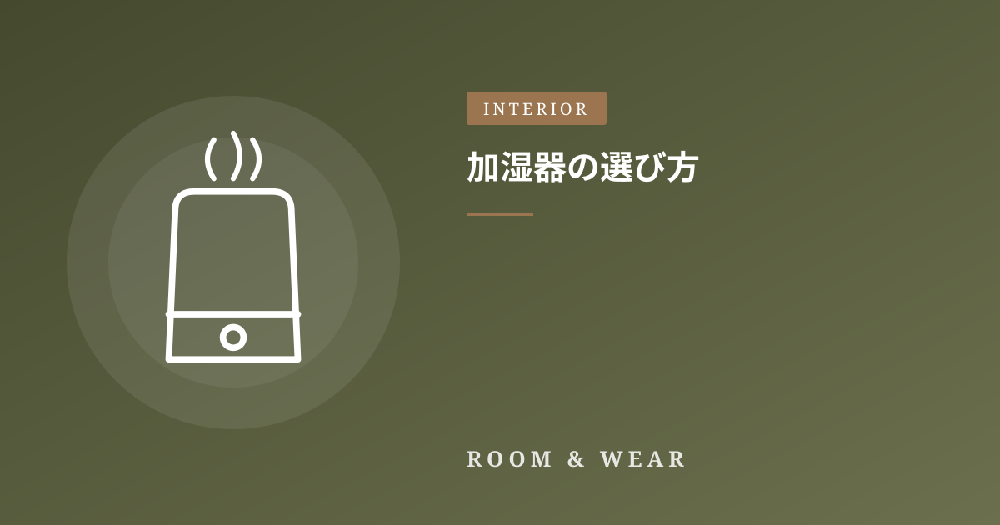

加湿器の選び方。4つの加湿方式の違いと手入れのしやすさ

※この記事にはアフィリエイトリンクが含まれています（広告について）。
冬は暖房で室内が乾燥しやすい季節。加湿器を選ぶときは、加湿の方式によって電気代や手入れのしやすさが大きく変わる点を知っておくと、自分に合った1台を選びやすくなります。
4つの加湿方式
| 方式 | 特徴 | 注意点 |
|---|---|---|
| スチーム式 | 水を沸かして蒸気を出す。加湿力が高い | 電気代が高め。吹き出し口が熱くなる |
| 気化式 | 水を含んだフィルターに風を当てる。電気代が安い | 加湿はゆっくり。フィルターの手入れが必要 |
| 超音波式 | 振動で細かい水の粒を出す。小型でデザインが豊富 | こまめな水の入れ替えと掃除が大切 |
| ハイブリッド式 | 2つの方式を組み合わせる。バランスが良い | 本体価格は高め |
部屋の広さに合わせる
商品ページには「適用床面積（木造◯畳・プレハブ洋室◯畳）」が書かれています。使う部屋の広さより少し余裕のあるものを選ぶと安心です。
手入れのしやすさを重視する
加湿器は水を扱う家電なので、清潔に保つことが大切です。タンクの口が広く、手を入れて洗えるか、上から給水できるかは、毎日使ううえで大きな差になります。
湿度計もあると便利
室内の湿度は高すぎても低すぎても快適ではありません。湿度計を置いて部屋の状態を見ながら使うと、加湿しすぎによる結露なども防ぎやすくなります。
条件別に選んだ3点
記事で比べた加湿方式のうち「スチーム式」と「ハイブリッド式」から1台ずつと、湿度を確かめる温湿度計を選びました。仕様は2026年11月17日にAmazonの販売ページで確認した内容です。編集部が実際に使用したレビューではありません。購入前に最新の情報をご確認ください。
| 商品 | 方式 | 適用床面積 | 手入れのポイント |
|---|---|---|---|
| 象印 スチーム式加湿器 4.0L EE-DF50-HA | スチーム式 | 13畳 | フィルター不要 |
| ダイニチ ハイブリッド式加湿器 RXCタイプ HD-RXC500C-W | ハイブリッド式 | 8.5〜14畳 | フィルターの手入れが必要 |
| タニタ 温湿度計 TT-559 | 温湿度計 | — | — |
スチーム式
象印 スチーム式加湿器 4.0L EE-DF50-HA（グレー）
- 品番
- EE-DF50-HA
- タンク容量
- 4.0L
- 適用床面積
- 13畳（長時間加湿タイプ）
- 連続加湿
- 約8時間（室温20℃・満水・標準モード）
- 安全機能
- チャイルドロック・ふた開閉ロック・転倒湯もれ防止構造
- 特徴
- 水を沸かして蒸気を出すスチーム式。フィルターがなく、広口の容器で手入れしやすい。
- 向いている人
- 手入れの手間を減らして、清潔に加湿したい人
- 注意点
- スチーム式は電気代が高めになる傾向があります。蒸気口は熱くなるので、置き場所に注意してください。
- 価格
- 価格・在庫は変動するため掲載していません（販売ページの確認日：2026年11月17日）。
ハイブリッド式
ダイニチ ハイブリッド式加湿器 RXCタイプ HD-RXC500C-W（サンドホワイト）
- 品番
- HD-RXC500C-W
- 加湿量
- 標準 500mL/h（室温20℃）
- 適用床面積
- 木造和室8.5畳・プレハブ洋室14畳
- タンク容量
- 5.0L
- 消費電力
- 標準 163W（50/60Hz）
- 特徴
- 加熱と気化を組み合わせたハイブリッド式。湿度を設定して運転できる。
- 向いている人
- 電気代と加湿のパワーのバランスを取りたい人
- 注意点
- フィルターの定期的な手入れが必要です。販売元はAmazon以外のショップで、発送まで3〜4日かかる表示でした。
- 価格
- 価格・在庫は変動するため掲載していません（販売ページの確認日：2026年11月17日）。
湿度の確認
タニタ 温湿度計 TT-559（グレー）
- 品番
- TT-559
- 表示
- 温度・湿度・時計・カレンダー
- 快適度
- 「乾燥」「快適」「不快」の3段階表示
- 設置
- 壁掛け・卓上・マグネット
- 特徴
- 部屋の湿度を数字で確かめられる温湿度計。加湿しすぎの防止にも。
- 向いている人
- 加湿器の効き目を確認したい人
- 注意点
- 電池の種類は販売ページで確認してください。
- 価格
- 価格・在庫は変動するため掲載していません（販売ページの確認日：2026年11月17日）。
まとめ
加湿力重視ならスチーム式、電気代重視なら気化式、デザインやコンパクトさ重視なら超音波式。どれを選ぶ場合も、手入れのしやすさをチェックしておきましょう。
この記事に関連するアイテムを探す
Amazonの検索結果ページに移動します。条件に合う商品を比較してお選びください。
- スチーム式加湿器Amazonで商品を探す
- ハイブリッド式加湿器Amazonで商品を探す
- デジタル温湿度計Amazonで商品を探す
価格・在庫・仕様は変わることがあります。購入前にAmazonの商品ページで最新の情報をご確認ください。